ORÍGENES DEL FÚTBOL:
Antecedentes históricos
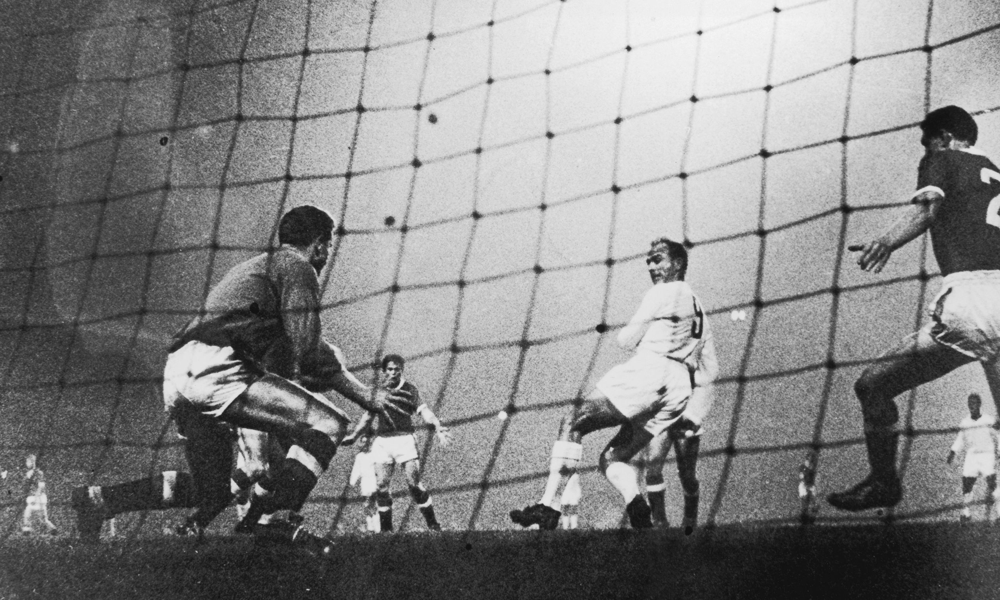
La historia del fútbol presenta la complejidad de todos aquellos hechos humanos cuyos orígenes son imprecisos en el tiempo y en el espacio, es decir cronológica y geográficamente.
Una mirada hacia el pasado de este deporte tal como se lo conoce en la actualidad, por lo menos en sus rasgos más globales y genéricos, conduce sencillamente a la Gran Bretaña de la segunda mitad del siglo XIX y a sus grandes y aristocráticos colegios de Westminter, Harrow y Charterhouse y hacia un sector de la población solidamente acomodad que disponía del tiempo suficiente para practicar formas diversas de ocio.
No es un hecho casual que gran parte de las especialidades deportivas actualmente más difundidas tuvieran su centro de inspiración en la pujante sociedad británica, dirigida por una elite aristocrática pero pragmática, completamente aburguesada, capaz de adoptar una actitud displicente y cínica y de entregarse totalmente a la música o al deporte.
Sin embargo no sería justo diseñar el. Pasado del FÚTBOL con la exclusiva referencia a su nacimiento inglés, ya que existieron juegos de diversas índoles a los que cabe considerar como precedentes del FÚTBOL, de un modo u otro, tales juegos, unos muy remotos, otros más cercanos, tuvieron rasgos que, en la segunda mitad del siglo XIX, con diversas características resurgieran en el fútbol inglés.
LEYENDAS DEL FUTBOL
1- PELÉ
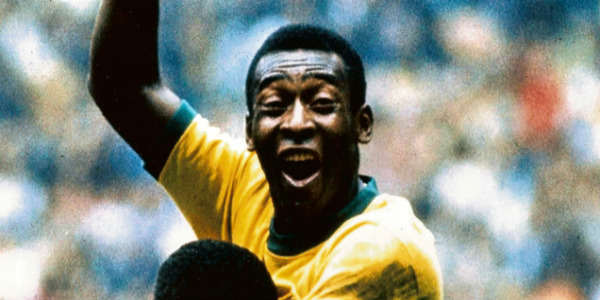
Fue elegido el mejor jugador del siglo en una votación hecha por los ganadores del Balón de Oro.
La IFFHS lo nombró el mejor jugador del mundo y el Comité Olímpico Internacional le otorgó el título del mejor deportista del siglo XX.
2- Johan Cruyff
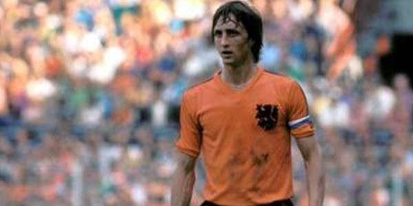
Es considerado por la FIFA uno de los cuatro mejores jugadores de fútbol del siglo XX, junto a Pelé, Diego Armando Maradona, y Alfredo Di Stéfano, y el mejor de Europa.
También fue elegido en segunda posición como Mejor Jugador del Siglo XX por la IFFHS y en 1999 como el tercer Mejor Jugador del Siglo por todos los ganadores del Balón de Oro.
3- Franz Beckenbauer
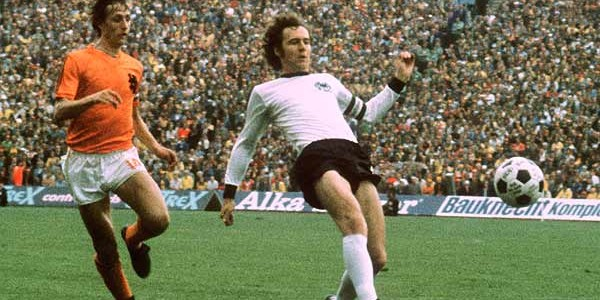
Fue galardonado con el Balón de Oro de Europa en 1972 y 1976.
Ocupa el tercer lugar en el ranking del Mejor futbolista del siglo publicada por IFFHS en el 2004.
4- Alfredo Di Stéfano
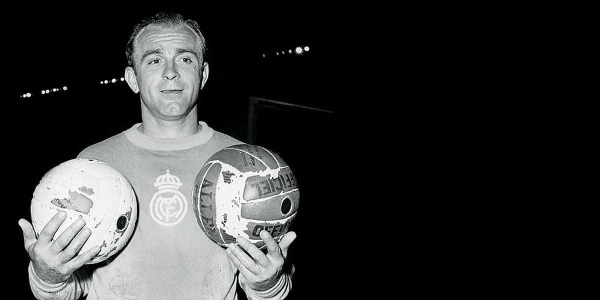
Es considerado por la FIFA como uno de los cinco mejores jugadores de fútbol del siglo XX.
En 2004 fue elegido el cuarto mejor jugador del siglo XX por la IFFHS, y el mejor por todos los ganadores del Balón de Oro hasta 1999.
5- Diego Maradona
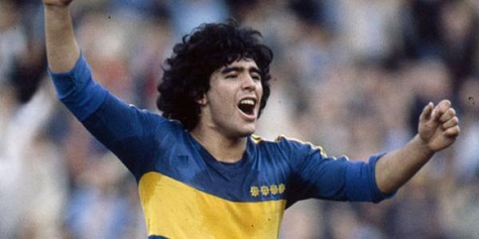
Es considerado como uno de los mejores jugadores en la historia de este deporte, asimismo ha sido catalogado como el mejor jugador de la historia de los mundiales.
Ha sido elegido como el Mejor Jugador del Siglo con el 53,6% de los votos en una votación oficial realizada en el sitio web de la FIFA y obtuvo la tercera ubicación en una encuesta efectuada por los miembros de la Comisión del Fútbol de esa institución y los suscriptores de la FIFA Magazine.
6- Ferenc Puskás
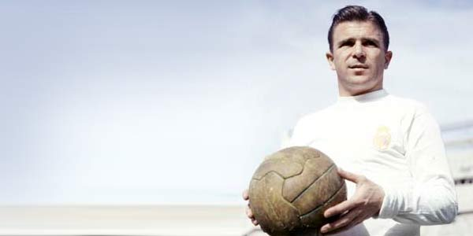
Fue elegido por FIFA el Máximo goleador del siglo en el 2004 y ocupa el sexto lugar en el ranking del Mejor futbolista del siglo publicada por IFFHS en el 2004.
Perteneció a la increíble Selección Húngara conocida como Los Magiares Mágicos, que ganó la Medalla de Oro en las Olimpiadas de Helsinki 1952 y logró el subcampeonato en la Copa Mundial de Fútbol Suiza 1954.
Posteriormente haría leyenda en el Real Madrid conquistando cinco campeonatos de liga.
7- Michel Platini
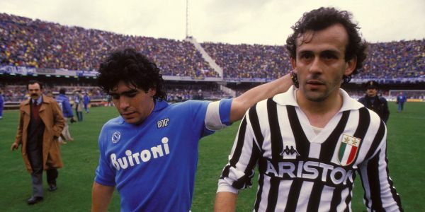
Es considerado por la FIFA como uno de los mejores jugadores europeos del siglo XX y uno de los grandes mediocampistas de la historia del fútbol.
Ganador, entre otros títulos, del campeonato italiano, de la Copa de Campeones de Europa y de la Copa Intercontinental con la Juventus y de la Eurocopa de naciones con Francia, recibió el Balón de Oro por tres años consecutivos entre 1983 y 1985.
8- Manuel Francisco dos Santos "Garrincha"
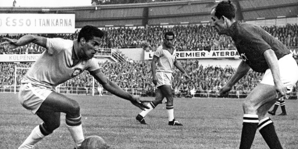
Es considerado una de las máximas glorias del fútbol mundial. Formó parte de la Selección de fútbol de Brasil que ganó la Copa Mundial de Fútbol de Suecia 1958 y Chile 1962, en donde fue elegido unánimemente como el mejor futbolista del torneo.
Se convirtió, junto con Pelé, en el jugador más querido de la afición brasileña, por lo que lo apodaron La alegría del pueblo.
9- Eusébio
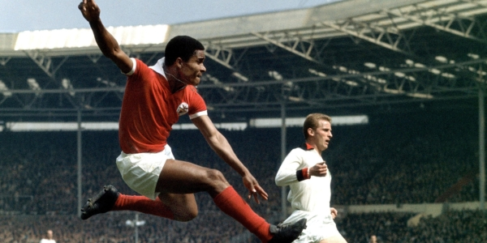
Es considerado por FIFA uno de los mejores jugadores europeos del siglo XX y uno de los grandes delanteros de la historia del fútbol. Ocupa el 9º puesto en la lista de los 50 mejores jugadores del siglo XX según la IFFHS.
En 1965 obtuvo el Balón de Oro al mejor jugador de Europa, en 1966 y 1973 la Bota de Oro.
10- Bobby Charlton
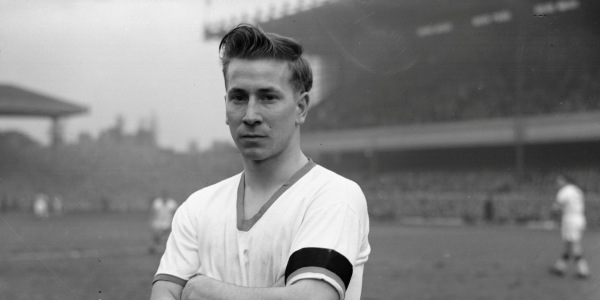
Es considerado por FIFA como el mejor jugador inglés de todos los tiempos y uno de los mejores futbolistas europeos del siglo XX. Fue el que bautizó como Teatro de los sueños a Old Trafford.
Es el segundo jugador con más partidos jugados y el que tiene más goles en la historia del Manchester United, con 249 goles en 758 apariciones.